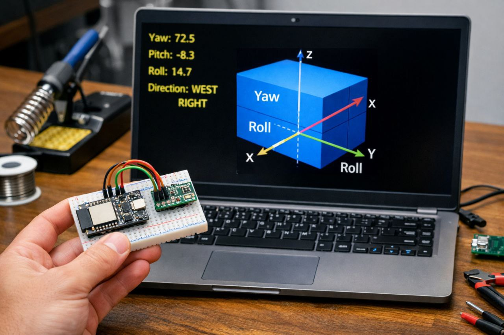
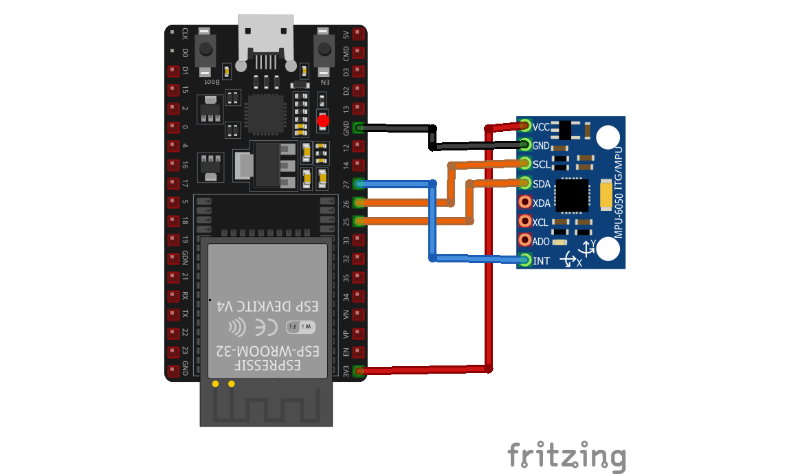

Code for ESP32
#include
#include "I2Cdev.h"
#include "MPU6050_6Axis_MotionApps20.h"
MPU6050 mpu;
uint16_t packetSize;
uint16_t fifoCount;
uint8_t fifoBuffer[64];
Quaternion q;
VectorFloat gravity;
float ypr[3];
volatile bool mpuInterrupt = false;
void IRAM_ATTR dmpDataReady() { mpuInterrupt = true; }
void setup() {
Serial.begin(115200);
Wire.begin(25, 26); // SDA=25, SCL=26
pinMode(27, INPUT); // INT pin
mpu.initialize();
if (!mpu.testConnection()) {
Serial.println("MPU FAIL");
while (1);
}
if (mpu.dmpInitialize() == 0) {
mpu.setDMPEnabled(true);
attachInterrupt(digitalPinToInterrupt(27), dmpDataReady, RISING);
packetSize = mpu.dmpGetFIFOPacketSize();
Serial.println("READY");
}
}
void loop() {
if (!mpuInterrupt) return;
mpuInterrupt = false;
fifoCount = mpu.getFIFOCount();
if (fifoCount < packetSize) return;
mpu.getFIFOBytes(fifoBuffer, packetSize);
mpu.dmpGetQuaternion(&q, fifoBuffer);
mpu.dmpGetGravity(&gravity, &q);
mpu.dmpGetYawPitchRoll(ypr, &q, &gravity);
float yaw = ypr[0] * 180 / PI;
float pitch = ypr[1] * 180 / PI;
float roll = ypr[2] * 180 / PI;
Serial.print(yaw); Serial.print(",");
Serial.print(pitch); Serial.print(",");
Serial.println(roll);
}
Code for Processing
import processing.serial.*;
Serial myPort;
float yaw, pitch, roll;
void setup() {
size(900, 700, P3D);
myPort = new Serial(this, Serial.list()[0], 115200);
myPort.bufferUntil('\n');
}
void draw() {
background(20);
lights();
translate(width/2, height/2, 0);
rotateY(radians(-yaw));
rotateX(radians(pitch));
rotateZ(radians(-roll));
fill(0, 180, 255);
stroke(255);
strokeWeight(2);
box(400, 80, 600);
}
void serialEvent(Serial p) {
String data = p.readStringUntil('\n');
if (data != null) {
String[] v = split(trim(data), ',');
if (v.length == 3) {
yaw = float(v[0]);
pitch = float(v[1]);
roll = float(v[2]);
}
}
}